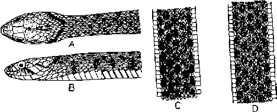
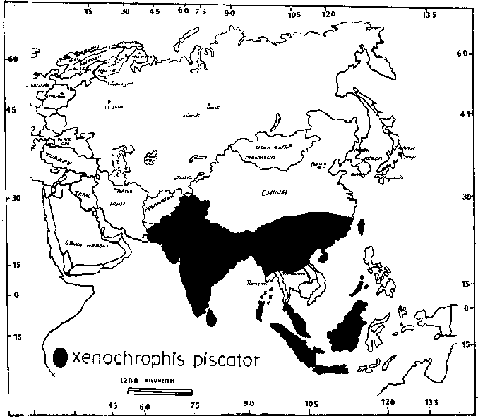

|
Digitized Inventory of Animal Resources: Reptilia ( Snakes ) Principal Investigator: Dr. R. J. B Alfred, Co-Investigator: Dr. Rama Krishna, Contributed by:
Dr. R.C.Sharma |
Xenochrophis piscator (Schneider 1799)
Taxonomic
Details
----- Scientific Name
----- Classification
----- Synonyms
----- Common Names
Other
Biological Details
----- Habit and
Habitat
----- Distribution
---------- Extent of
Occurrence
---------- Area of occurrence
---------- Altitude
---------- Population
-----
Conservation Status
-----
Diagnostic
Features
-----
Breeding system
Miscellaneous
Information
Literature
Genus . Xenochrophis Gunther 1864
This genus comprises fresh water snakes with cylindrical body; head quite distinct from the neck; snout long; eyes are moderately large with round pupil; nostril is dorsolateral; pierced into a single nasal, directed outwardly upward; scales round the body are in 19 or 17 rows, these are strongly keeled and are devoid of the apical pits; ventral shields are some what rounded; tail is moderately long, subcaudal shields are paired. Hemipenis and sulci spermaticus forked. Malnate (1960) separated this genus from Natrix. Recently Malnate and Minton (1965) has united this genus with Fowlea, but this can be regarded as a distinct and independent genus which includes 4 species, two are available in India and Pakistan and the remaining two are distributed in China, Taiwan, Malaysia and Sri Lanka.
Scientific Name : Xenochrophis piscator (Schneider 1799)
Family :
Classification: Genus .
Synonyms:
Common Names: checkered
keelback
HABIT & HABITAT The checkered Keelback is the commonest freshwater, fairly robust snake The checkered keelback is a diurnal, vicious, agile, most common freshwater snake inhabiting marshy areas, pools of water, ditches, canals and shallow edges of rivers with plenty of aquatic vegetation. The hibernation takes place from December to January. Its main food comprises small fishes and frogs. Courtship and mating takes place in late September to October; numerous gravid females are seen in November. The egg laying takes place from late November to the end of May. Clutch size varies from 8 to 90 (16 x 28 mm.) eggs and the incubation period ranges from 35 to 55 days.
Sta
Distribution:
Altitude:
Conservation status: Fairly Common
Length : The checkered Keelback is the commonest freshwater, fairly robust snake whose length hardly exceeds a meter; the maximum recorded length is 1.48 m.
Body : The head is oval and distinct from neck, slightly flattered, with a bluntly pointed snout. Eyes are moderately large, with round pupil; body cylindrical; Hemipenis and sulci spermaticus are forked.
Scales : costals are 19 at the middle of the body, lateral rows are smooth, median rows are feebly keeled; ventrals are 122-158; subcaudals 60-97; anal is divided.
Colouration : The colour of the body is much variable, may be yellowish, olive, light green, gray, brown with a reddish tinge, with five rows of small light black spots, bars which are generally narrow than interspaces separating them, quincunically arranged; head olive brown above, with two oblique black streaks, one below, the other behind the eye. The dorsal black markings are arranged in five transverse series (a ventral, 2 dorsolateral and 2 lateral) and form a chess-board like pattern; belly is creamy white, usually with small black spots on the lateral margins of ventrals.
Breeding Biology : Courtship and mating takes place in late September to October; numerous gravid females are seen in November. The egg laying takes place from late November to the end of May. Clutch size varies from 8 to 90 (16 x 28 mm.) eggs and the incubation period ranges from 35 to 55 days.

Xenochrophis piscator
(Schneider) : A. Dorsal
pattern of head and neck B. Lateral pattern of head and neck C & D. Dorsal
pattern of body 